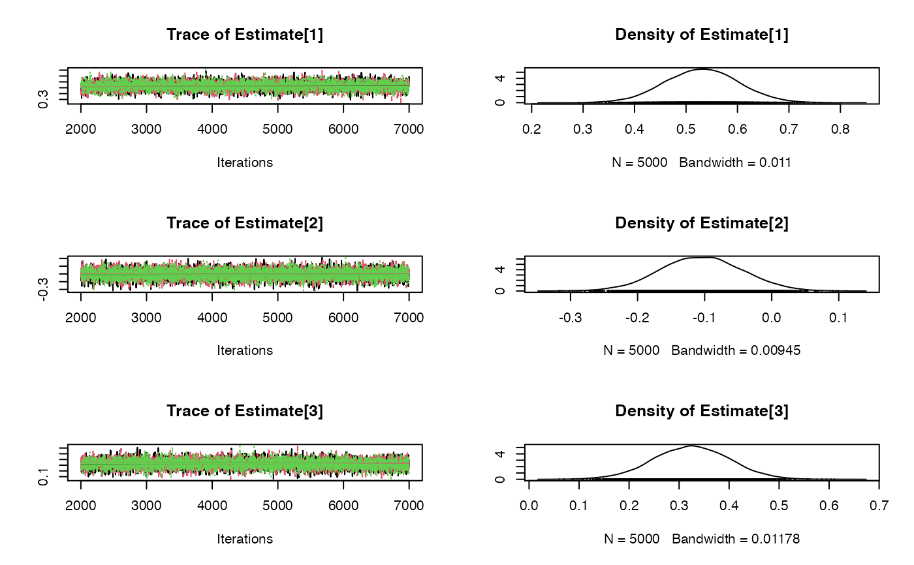
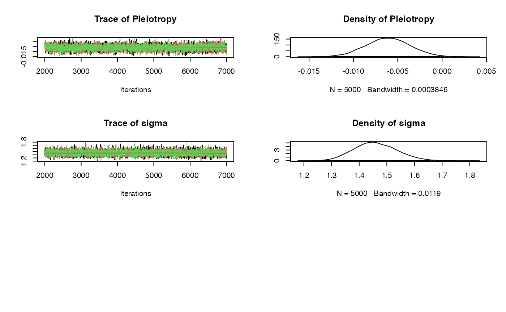

R/mvmr_egger_rjags.R
mvmr_egger_rjags.RdBayesian implementation of the MVMR-Egger model with choice of prior distributions fitted using JAGS.
mvmr_egger_rjags( object, prior = "default", betaprior = "", sigmaprior = "", orientate = 1, n.chains = 3, n.burn = 1000, n.iter = 5000, seed = NULL, rho = 0.5, ... )
| object | A data object of class |
|---|---|
| prior | A character string for selecting the prior distributions;
|
| betaprior | A character string in JAGS syntax to allow a user defined prior for the causal effect. |
| sigmaprior | A character string in JAGS syntax to allow a user defined prior for the residual standard deviation. |
| orientate | Numeric value to indicate the oriented exposure |
| n.chains | Numeric indicating the number of chains used in the MCMC estimation, the default is |
| n.burn | Numeric indicating the burn-in period of the Bayesian MCMC estimation. The default is |
| n.iter | Numeric indicating the number of iterations in the Bayesian MCMC estimation. The default is |
| seed | Numeric indicating the random number seed. The default is the rjags default. |
| rho | Numeric indicating the correlation coefficient input into the joint prior distribution. The default value is |
| ... | Additional arguments passed through to |
An object of class mveggerjags containing the following components:
The mean of the simulated pleiotropic effect
The mean of the simulated causal effect
Standard deviation of the simulated causal effect
The value of the residual standard deviation
The credible interval for the causal effect, which includes the lower (2.5%), median (50%) and upper intervals (97.5%)
Output of the Bayesian MCMC samples
The specified priors
Bowden et. al., Mendelian randomization with invalid instruments: effect estimation and bias detection through Egger regression. International Journal of Epidemiology 2015. 44(2): p. 512-525. doi: 10.1093/ije/dyv080
dat <- mvmr_format(rsid = dodata$rsid, xbeta = cbind(dodata$ldlcbeta,dodata$hdlcbeta,dodata$tgbeta), ybeta = dodata$chdbeta, xse = cbind(dodata$ldlcse,dodata$hdlcse,dodata$tgse), yse = dodata$chdse) fit <- mvmr_egger_rjags(dat) summary(fit)#> Prior : #> #> Pleiotropy ~ dnorm(0, 1E-3) #> #> for (j in 1:K) { #> Estimate[j] ~ dnorm(0,1E-3) #> } #> sigma ~ dunif(.0001, 10) #> #> Estimation results: #> #> MCMC iterations = 6000 #> Burn in = 1000 #> Sample size by chain = 5000 #> Number of Chains = 3 #> Number of SNPs = 185 #> #> Inflating Parameter: 1.459851 #> #> Estimate SD 2.5% 50% 97.5% #> Avg Pleio -0.006101017 0.002482833 -0.01099225 -0.006098663 -0.001271318 #> Causal Effect1 0.530930185 0.071002015 0.39248889 0.531046529 0.670587859 #> Causal Effect2 -0.104661427 0.061001758 -0.22463990 -0.105072686 0.014792940 #> Causal Effect3 0.324715531 0.076026197 0.17307021 0.324821271 0.472645377# 90% credible interval fitdf <- do.call(rbind.data.frame, fit$samples) cri90 <- sapply(fitdf, quantile, probs = c(0.05, 0.95)) print(cri90)#> Estimate[1] Estimate[2] Estimate[3] Pleiotropy sigma #> 5% 0.4144180 -0.203788414 0.1995066 -0.010141358 1.33846 #> 95% 0.6482998 -0.003751364 0.4492681 -0.001984779 1.59077